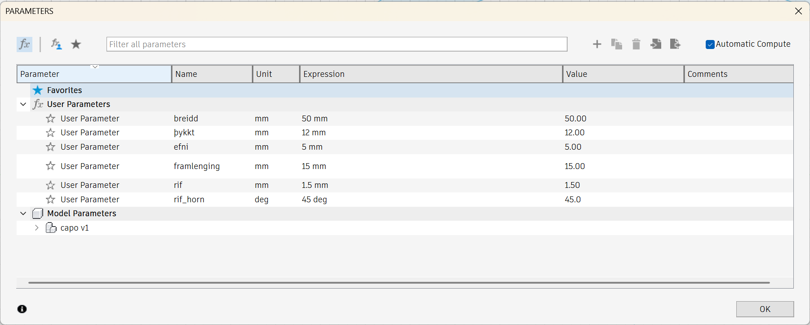

3D prentun og 3D skönnun.
Hanna átti lítið módel fyrir 3D prentun sem ekki væri hægt að framkvæma með frádráttar framleiðslu (addative vs subtractive). Hanna og framkvæma prófanir á 3D prentaranum til að ákvarða hönnunar reglur og skorður áður en módelið er á endanum prentað. Útskýrðu hvað þú lærðir af ferlinu. Prentaðu hlutinn (max 100g af plasti skv. slicer). So átti að 3D skanna einhvern hlut.
Mig langði að 3D-prenta capo fyrir kassagítar – klemmu sem er notuð til að stytta hálsinn með því að þrýsta strengjunum niður. Flest capo eru með gormi sem heldur spennunni og festir þau á gítarinn, en mig langar að forðast að nota gorm í minni hönnun. Ég fann áhugaverða lausn á þessu á Thingiverse þar sem fasti endinn er rifflaður þannig að þegar lausi endinn er þvingaður inn, læsist hann á sinn stað – svipað og festingar á snjóbretti. Þetta kerfi virkar án gorms en tryggir samt sterka og örugga festingu á gítarhálsinum.
Ég vildi prenta þetta út í einu lagi þannig að allir hlutarnir væru samfastir eftir prentun, en að armurinn gæti samt snúist um liðinn. Til að prófa þessa hugmynd byrjaði ég á að hanna prufueintak – einfaldan lítinn lið. Þegar ég exportaði teikningunni yfir í Prusa Slicer, sem er sem er forrit sem tengist prentaranum sjálfum, birtist liðurinn sem einn samfelldur hlutur án þess að nokkuð benti til þess að hann gæti snúist. Til að leysa þetta vandamál endaði ég á því að bæta við holu í gegnum liðinn, þannig að hægt væri að nota skrúfu eða eitthvað annað til að festa hlutina saman.
Þegar ég hafði prentað prufueintakið prófaði ég að setja það saman og athuga hvernig það kæmi út. Þá komst ég að því að hlutirnir pössuðu ekki fullkomlega saman, sem stafaði af því að efnið þenst örlítið út við prentun. Til að koma í veg fyrir þetta þurfti ég að taka þessa útþenslu með í reikningana þegar ég hannaði capo-ið mitt og aðlaga mælingarnar þannig að hlutirnir pössuðu eftir prentun.
Ég byrjaði á því að mæla hálsinn á gítarnum mínum og námundaði allar mælingar gróflega upp að næstu "fallegu" tölu til að auðvelda útreikninga og hönnun. Til að halda sveigjanleika í hönnuninni teiknaði ég hana parametrískt, sem gerði mér kleift að breyta bæði breidd og þykkt capo-sins eftir þörfum. Fyrir rifflaða hlutann bjó ég til lítinn rétthyrndan þríhyrning og notaði síðan "rectangular pattern" til að afrita hann reglulega upp eftir arminum. Með þessu móti gat ég búið til jafna og endurtekna rifflun sem tryggir betri grip og festu þegar capo-ið er notað.
Parametrarnir sem voru notaðir eru eftirfarandi:
Hér samsvarar breiddin í raun breidd hálssins á gítarnum, þykktin samsvarar dýpt hálssins. Efni er efnisþykktin en raunverulega efnisþykktin var 3*Efni.
Þegar teikningin var tilbúin leit hún svona út:
Til þess að fá 3D-view af hlutnum fylgdi ég myndbandi af youtube.
Já einmitt